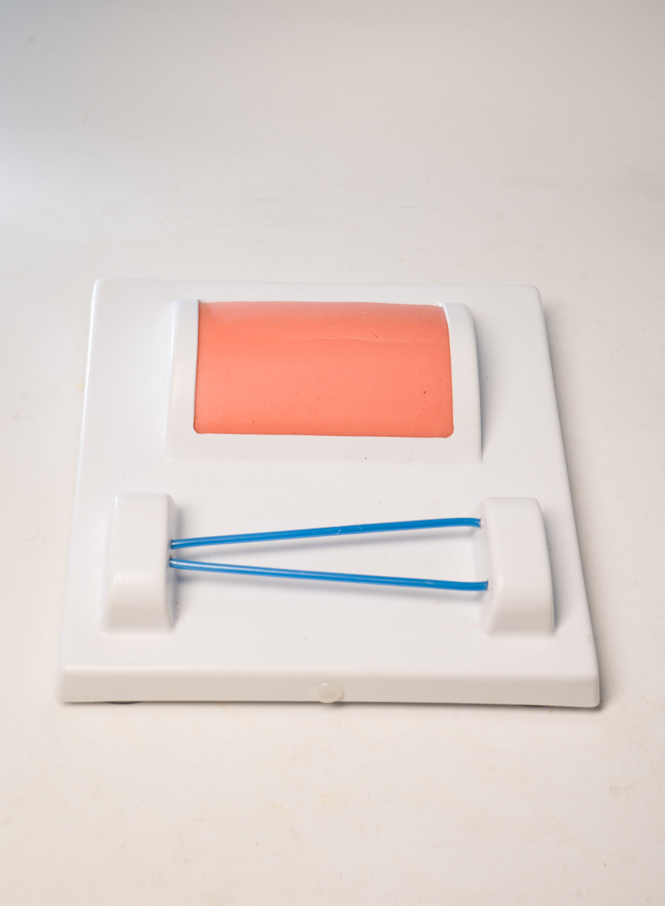

Company SemMed provides new simultators like in the video below
About Company
This site was created to show how far medicine has come in terms of educating new graduate students as surgeons. SemMed offers a choice of seven prototype simulators specifically for such professions as surgeon, anesthesiologist, nurse, therapist and many others.
History
 Medical simulators first appeared at the end of the 20th century, immediately revolutionizing
the methodology of medical education. Harvey's first electromechanical dummy, which fits the classification of the simulator,
appeared in 1968. The mannequin looked like an ordinary mannequin in a clothing store, but in fact it was the first true
cardio-pulse simulator capable of simulating the signs of about 30 heart diseases.
Medical simulators first appeared at the end of the 20th century, immediately revolutionizing
the methodology of medical education. Harvey's first electromechanical dummy, which fits the classification of the simulator,
appeared in 1968. The mannequin looked like an ordinary mannequin in a clothing store, but in fact it was the first true
cardio-pulse simulator capable of simulating the signs of about 30 heart diseases.
A difficult task for solving the problem in training surgeons is still the mastering
of practical skills by students until the moment of performing real operations. Previously, the simplest and most effective way to
solve this problem was the operations performed in the vivarium. In recent years, electronic simulators have appeared on the market
that allow simulating the course of an operation, completely repeating the real reactions of body tissues to the actions of a surgeon.
This approach reduces the risks and costs of training surgeons in both traditional operations and new minimally invasive treatments
such as laparoscopic cholecystectomy. At the same time, objectivity is ensured in assessing the results of the operation, which
allows for qualified certification of a specialist.
Simulators used to train doctors can simulate a huge number of diseases, simulate various reactions of
the body: coughing, sweating, pulse, temperature, pupil response to light, and others. Some medical simulation robots can make
sounds and talk to help doctors learn better diagnostics.
Many types of electronic and software simulators can be used for different areas of study. This is
individual training in surgery or group training to coordinate teamwork, training in diagnostic methods (for example, training in
ultrasound or flexible endoscopy, cardiology). Depending on the training needs, simulators can reproduce the body's response under
normal or extreme conditions. Simulation of a surgical instrument, endoscope or catheters is possible at the same time. At the same
time, during training, you can always pause by stopping the simulator, and discuss the student's work results, repeat certain actions
that need to be consolidated. Simulation training simplifies quality control of skills and knowledge, analysis of errors. Often,
medical simulators are used in the selection of personnel for medical institutions in order to assess the level of professional
knowledge of the applicant.